Fall 2012 Photos (SFMM)
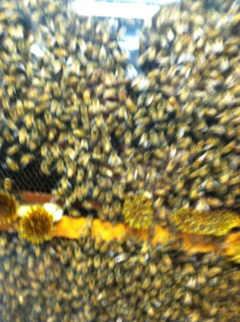
All right. Its time for our yearly Fall "Instert Year Here" Photos Update, and sadly, this one only takes us to Six Flags Magic Mountain. I never had time to do anything else like Disneyland or Knotts since I've been so busy with a Mt. Everest sized pile of bullsh*t for some of the worst classes I have ever taken in my life. Hell, most of this update just comes from breif little stops at the park before I work. But hey. I had a blast doing this and working and I'm hoping to do it again next year. And before one of our work days, we finally managed to stop at the Honey Tasting Room in Piru. Something we planned on doing back in 2010 and just postponing it for "Next Time", "Next Time", "Next Time", until we finally f*cking did it 2 years later.
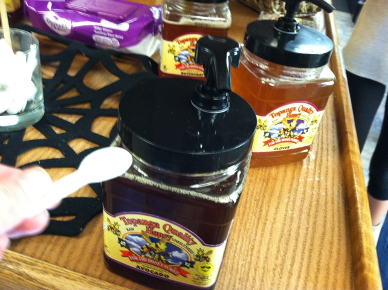
*gasp* "I can't believe it!!!! You can taste honey in the Honey Tasting Room!!! I never would've guessed!!!!!"
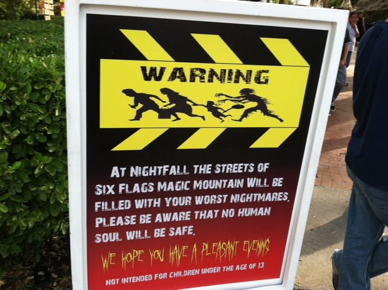
Warning. Antonio and his mom will be lurking around here at night.
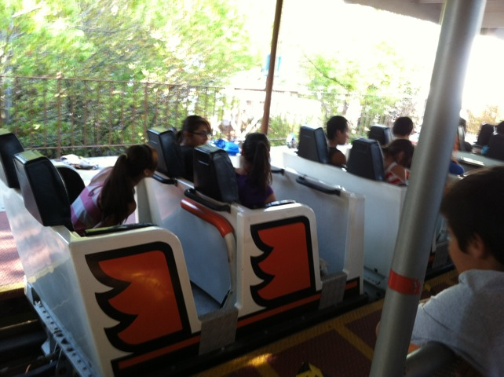
All right. Now time for one of the yearly highlights of Fright Fest. COLLOSUS BACKWARDS!!!!!!!!!
 "Crap!!! My coke broke!!! Better finish it off before it leaks all over the place."
"Crap!!! My coke broke!!! Better finish it off before it leaks all over the place."
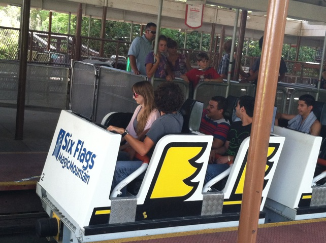
Why can't Collosus just run like this all the time?
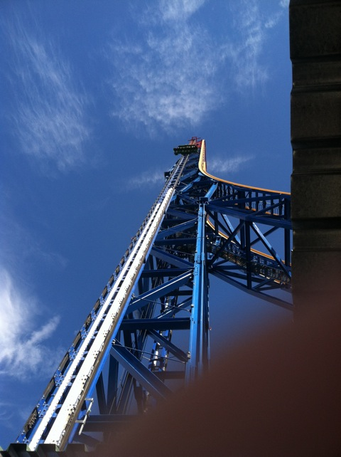
Time to get our falling fix on Lex Luthor. WEE!!!!!
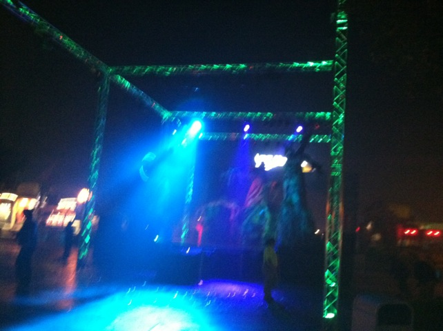
FRIGHT FEST 2012 IS HERE!!!!!
 A total list of some of the mazes at Fright Fest this year.
A total list of some of the mazes at Fright Fest this year.
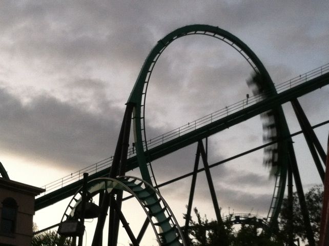
Riddlers is running good as usual.
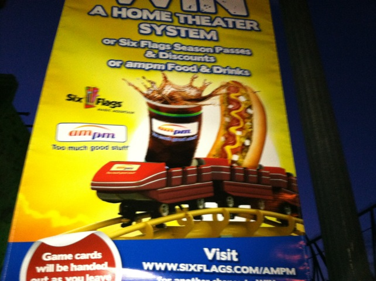
Why do I see an ad with Westcoaster at Six Flags Magic Mountain?
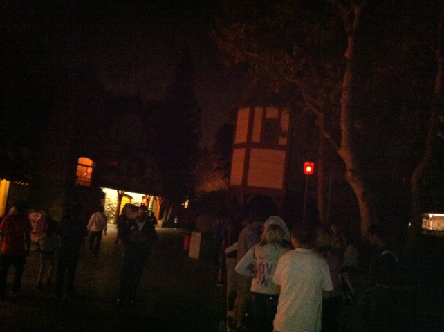
One of the new mazes at Fright Fest this year was Blackout, which Cody actually worked in this year.
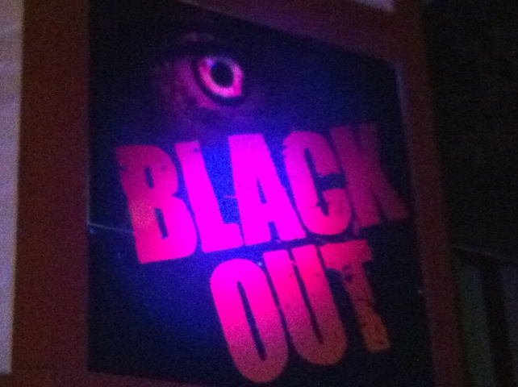
Hey Cody! How many people shat themselves in this maze?
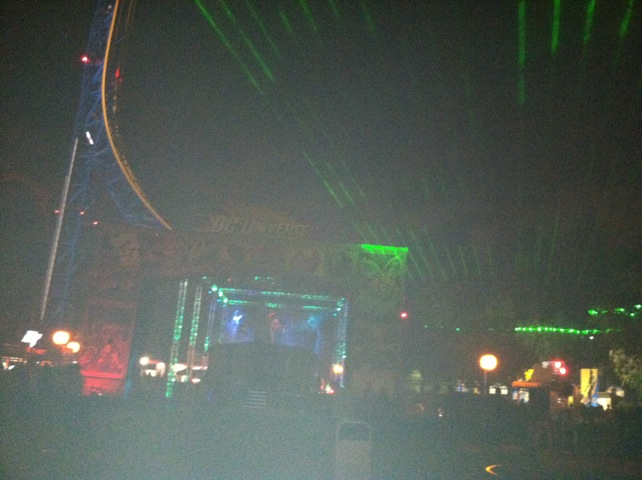
Yeah. Fright Fest 2012 is still going strong.
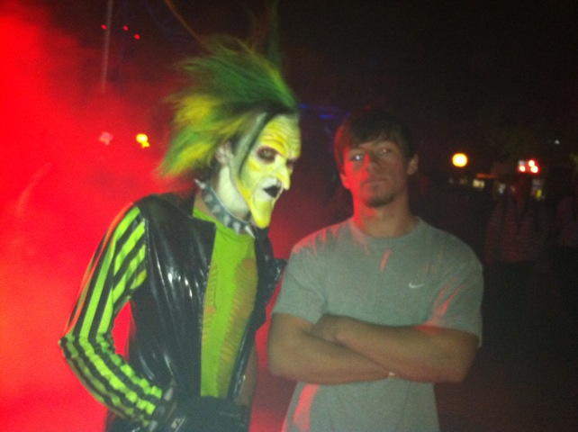
"I found Antonio!!!"
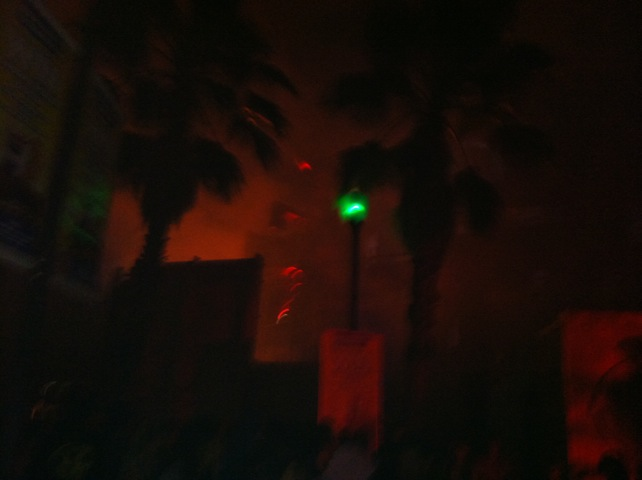
Aftermath was a cool maze. I liked the fire, but I felt it could've been better.
 I must say, Willoughby's Mansion was great. By far my favorite Fright Fest maze this year. It almost seemed like a walk through version of the Haunted Mansion.
I must say, Willoughby's Mansion was great. By far my favorite Fright Fest maze this year. It almost seemed like a walk through version of the Haunted Mansion.
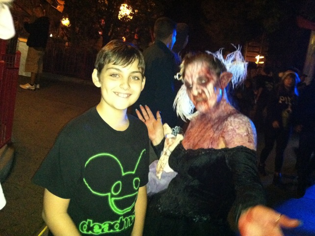
"Come on Giovanni!!! Act scared for me!!!!"
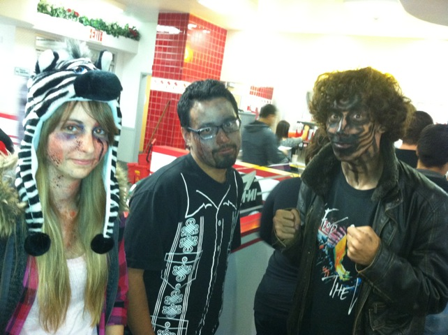
On our final day of Fright Fest, we all decided to go to In'N'Out afterwards, with everyone in their Fright Fest Make Up (Well except me, cause I was the only one who wasn't working for Fright Fest). It was a great Fright Fest season and I'm really hoping to become a scare actor for next year.
Home